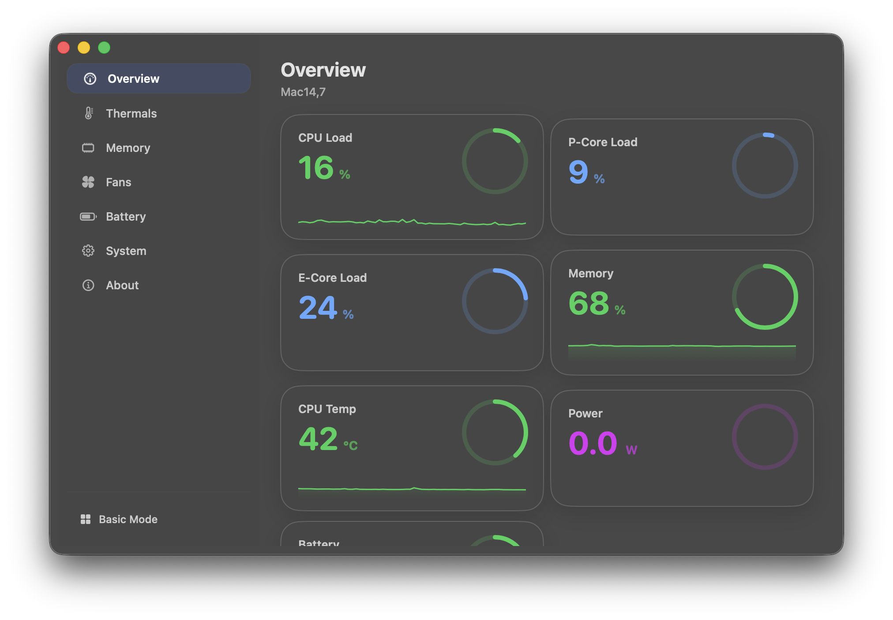
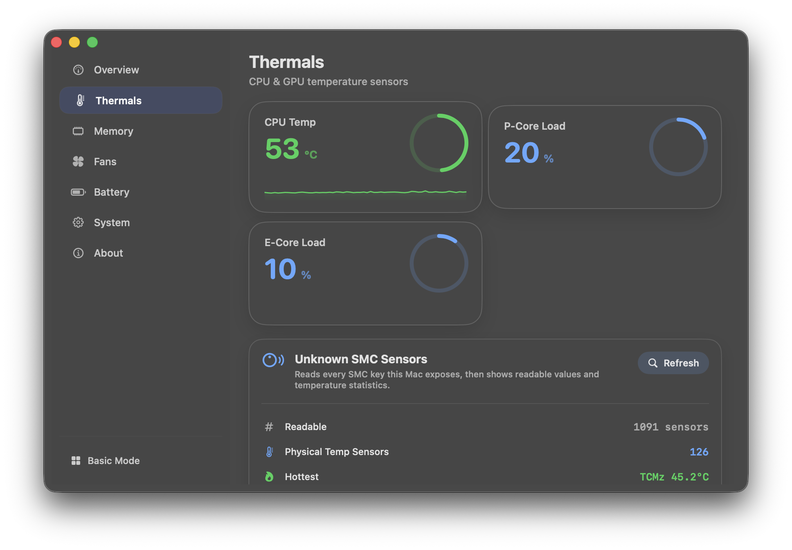
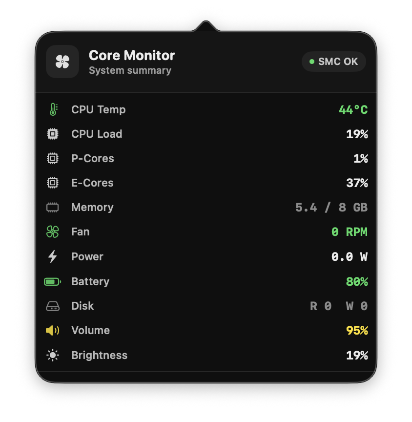

Live hardware readings
CPU, GPU, memory pressure, battery, power draw, storage, and fan RPM in a native interface built around clarity.
Hardware monitoring for Apple silicon
Heat, power, memory, battery, and fans in one focused view. Fast, readable, and kept on your Mac.
Signed releases. Open source. No telemetry. Optional helper-backed fan control. WeatherKit in entitlement-enabled builds.

Screens
A dashboard for long sessions, a menu bar for quick checks, and focused views when you need detail.


Features
Core Monitor is built for the moments when heat, sustained load, battery drain, and fan behavior actually matter.
CPU, GPU, memory pressure, battery, power draw, storage, and fan RPM in a native interface built around clarity.
Catch thermal trouble, swap growth, helper failures, battery issues, and fan safety conditions without a cloud service.
Monitoring works without the helper. Install the privileged path only if you want manual or managed fan writes.
Keep CPU load, live fan RPM, temperatures, and alerts nearby without turning the menu bar into a wall of tiny numbers.
Weather, widgets, launchers, and custom actions are there if you want them, without taking over the whole product story.
Privacy
Core Monitor keeps the core experience local, explicit, and easy to inspect.
No analytics pipeline. No tracking beacons. No background profile building.
You do not need to sign in, subscribe, or hand over an email address to use the app.
Process insights for alerts and memory views can be turned off, so local history stays free of app names.
The code is public. Releases are intended to ship signed and notarized for direct download outside the App Store.
Install
Start with monitoring. Add deeper control only if you want it.
1
Move Core-Monitor.app into /Applications and open it like any other Mac utility.
2
Use the tap once, then install the cask like any other Mac app. Homebrew will place Core-Monitor in /Applications.
brew tap --custom-remote offyotto-sl3/core-monitor https://github.com/offyotto-sl3/Core-Monitor
brew install --cask offyotto-sl3/core-monitor/core-monitor
brew upgrade --cask offyotto-sl3/core-monitor/core-monitor
3
Monitoring starts without the helper. Install the privileged helper later if you want fan writes and managed profiles.
Touch Bar
A quick look at Touch Bar widgets, layout changes, and customization.
Open the short walkthrough to see how the Touch Bar layer behaves before you enable it on a supported Mac.
Ready